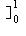
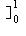

nxn- nxn+1dx = [n/(n + 1) xn+1 - n/(n + 2) xn+2  = n/[(n + 1)(n + 2)]→ 0 as n→ ∞.
nxn- nxn+1dx = [n/(n + 1) xn+1 - n/(n + 2) xn+2  = n/[(n + 1)(n + 2)]→ 0 as n→ ∞.Thus (fn)→ the 0-function.
To find the maximum, solve d/dxfn(x)= 0 to get:
n2xn-1 - n(n+1)xn = 0 ⇒ x = n/(n + 1) or 0.
The maximum is at n/(n + 1) and is thus [n/(n + 1)]n = [1 - 1/(n + !)]n+1→ e-1as n→ ∞ (by Exercises 6 Question 7).
Thus d∞(fn, 0) does not converge to 0 in R as n→ ∞ and so (fn) does not converge to the 0-function in d∞.